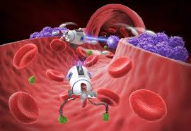

Welcome to our revolutionary nanobot-powered medical solutions page.

Target: Emergency trauma patients
Service: Injection of clot-inducing nanobots guided via magnetic fields
Value: Rapid, minimally invasive treatment for internal bleeding.
Target: Site-specific treatments
Service: Drug-releasing nanobots activated by local stimuli
Value: High efficacy with reduced side effects.
Target: Post-operative internal bleed risk
Service: Real-time monitoring and repair via nanobots
Value: Fewer secondary procedures.
Target: Veterinary and research use
Service: Life-saving intervention in valuable animals
Value: Controlled test environments with real benefits.
Target: Chronic illness patients
Service: Dormant nanobots ready for activation
Value: Preventative care and immediate emergency response.
Curious about the application of Nanobot Services? Check out this article on nanobot services.
Download a report on Nanobots in medicine!
Contact me with questions